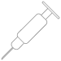

Front Crown
A world of new possibilities for your smile
A world of new possibilities for your smile
What to expect
At the appointment
- Duration 40-60 min
-  Oral anesthetic use
-
 Possible minor sensitivity
Possible minor sensitivity - Tooth colored temporary or final
After Appoinment
- Avoid eating chewy substances to avoid temporary crown dislodgement
- Avoid eating until numbness wears off
What it is
A crown is a complete covering of the anatomic crown of the tooth with the intent to improve and restore the existing tooth structure. Crowns on the front teeth are used for a few specific reasons.
- To reinforce a weakened tooth
- To change contour and anatomy of a tooth
- To change a color of a tooth
- To change length of a tooth
How it is accomplished
Crowns are necessary for one of the two reasons
If needed, missing tooth structure is
replaced with a composite build up
A temporary crown is placed on the tooth
while the final crown is being fabricated
Final crown is cemented on the tooth
on the delivery appointment
Materials
- Zirconia Also known as zirconia based ceramics are the strongest ceramic materials available in dentistry today. The trade off of the material is that it is the least esthetic. Zirconia crowns always look flatter in color and do not have the depth and translucency that natural teeth display. This material is ideal for molar crowns in the back of the mouth.
- Porcelain The best looking material available in dentistry. Glassy matrix of porcelain materials creates translucency and depth of colors that is found in natural teeth. This also happens to be the weakest type of crown material. Perfect use of porcelain would be on the front teeth where biting stresses are smallest and need for esthetic appearance is greatest.
- Metal-alloys Gold crowns fall into this category of materials. Historically this is the least esthetic material however it has been time tested and found to have the longest service life. In addition this material allows the restoration to be more conservative thereby saving more tooth structure. This material is ideal for teeth with low esthetic but high stress environments such as molar teeth on someone who has a clenching or grinding habit.